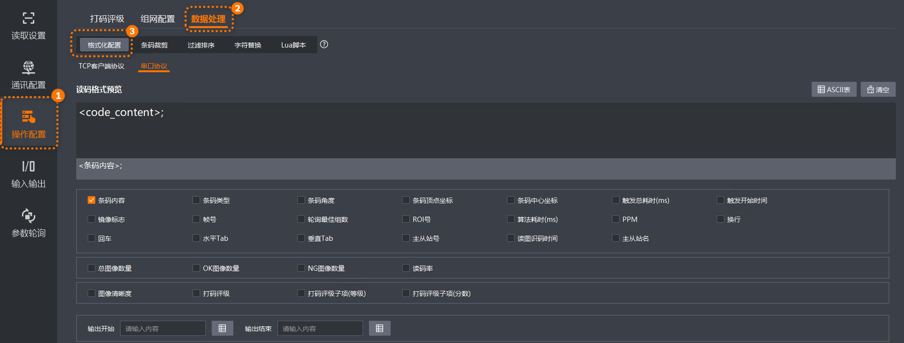

格式化配置功能支持通过通讯协议输出的数据按照特定的结构、样式或规则进行组织，包括添加或删除输出内容或字符、设置输出内容开始和结束部分等。
IDMVS支持您对已启用通讯协议的输出数据进行灵活格式化，操作步骤如下。
使用格式化配置前，请在通讯配置页面启用除客户端SDK协议以外的通讯协议。
当Lua脚本开启脚本输出使能开关时，输出内容格式化由Lua脚本控制，此处的格式化配置功能不可配置。
在IDMVS主界面功能导航栏，选择，进入格式化配置页签。

在读码格式预览内容框上方，选择通讯协议。
在读码格式预览内容框中，通过单击鼠标左键指定光标位置，即指定内容插入位置。
在读码格式预览内容框下方配置需添加的内容、设置输出内容开始和结束等。
各通讯协议可配置参数说明见下文。
在读码格式预览内容框右上角，支持通过单击ASCII表添加字符，可添加字符说明请参见ASCII码；支持通过单击清空，删除内容框中已添加的所有内容。
当通过FTP协议传输读码器生成的文件时，支持格式化传输文件的上传路径和传输图片名称。
定义FTP上传的文件路径，可根据实际需求选择文件路径包含的内容及顺序，可选择设备IP、Image目录、年、月和日，以及添加ASCII表中的字符。
定义FTP上传的结果文件内容，可根据实际需求选择结果名称包含的内容及顺序，可选择条码内容、条码类型、条码角度、触发总耗时(ms)、触发开始时间、镜像标志等，以及添加ASCII表中的字符。
在界面选择仅包含结果或结果和图片时，可配置此参数。
可选择参数项请以界面显示为准，此处不再一一列举。
定义FTP上传的图片名称，可根据实际需求选择图片名称包含的内容及顺序，可选择读码结果、条码内容、条码类型、帧时间、触发号、帧号、轮询最佳组数、ROI号和递增值，以及添加ASCII表中的字符。
通信协议为TCP客户端、TCP服务端、串口、Profinet、Melsec/SLMP、EthernetlP、ModBus、UDP、Fins时，可格式化配置输出内容。
定义通过通讯协议输出包含的内容，根据实际需求在配置界面上选择参数项内容和顺序，可选择条码内容、条码类型、总图像数量、OK图像数量、读码评分、打码评级等。
可选择参数项请以界面显示为准，此处不再一一列举。
通过输出开始和输出结束参数截取以特定字符开始和结束的数据进行传输。
客户端支持对输出开始/结束内容进行格式化编辑。点击输出开始或输出结束内容框右侧的，打开格式化编辑窗口。可勾选条码总数、触发号两个参数。
读取多个条码时，条码总数和触发号仅输出一次。
选择当没有读码结果时是否需要输出预设的文本，开启后可通过配置**输出无读补齐文本参数指定预设文本。默认文本为“NoRead”。
读码器检测到条码图像但无法成功解码时自动输出的预设文本，可自定义。默认文本为“NoRead”。需通过主界面功能导航栏的开启有码无读检测功能。
该功能不支持客户端SDK协议和FTP协议。
读码器未识别到有效条码时自动输出的预设文本，可自定义。默认文本为“NoCode”。需通过主界面功能导航栏的开启有码无读检测功能。
该功能不支持客户端SDK协议和FTP协议。
在停止触发配置界面选择读码个数停止触发时，则可设置无读数量补齐方式。可选方式如下：
关闭：不开启无读补齐功能。
按数量补齐：假如设置的最小码个数为3，当实际读取条码个数为2时，读码器将输出2个有效条码和1个内容为“Noread”的条码（共3个）。
仅Noread补齐：假如设置的最小码个数为3，当实际读取条码个数为2时，读码器将输出“Noread”。
输出的默认文本“Noread”可在**输出无读补齐文本中自定义。例如，若修改为“No”，则输出文本也为“No”。
选择每条输出内容后是否自动添加回车符。
选择每条输出内容后是否自动添加换行符。